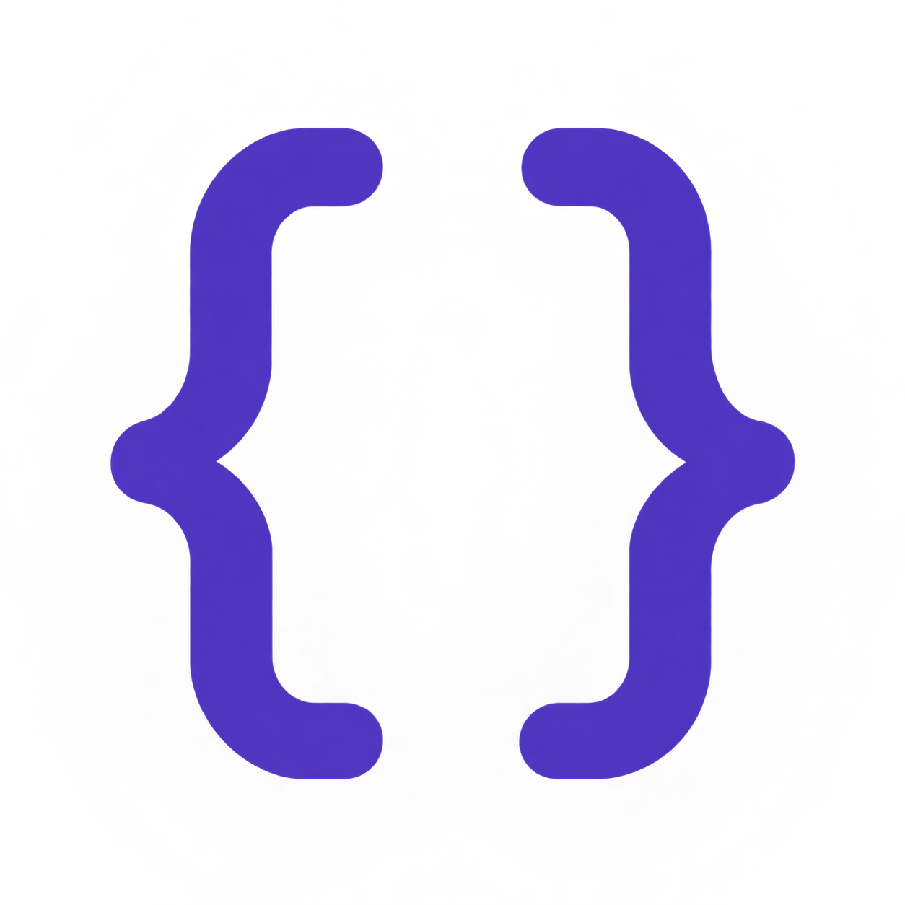

Exercício 1 - O conceito de algoritmo
Conferir resposta e explicação
Alternativa A. Um algoritmo descreve passos claros, organizados e finitos para realizar uma tarefa. Ele pode ser representado antes de escrevermos qualquer código.

Módulo 01 - Fundamentos
Como transformar um problema em instruções que o computador consegue executar? O primeiro passo é compreender o problema e organizar uma solução.
Você vai descobrir o que é um algoritmo, organizar passos e acompanhar um programa em C que calcula a média de duas notas. Não é necessário ter programado antes.
Um algoritmo é uma sequência finita e organizada de instruções para realizar uma tarefa iu resolver um problema. Cada instrução precisa ser clara para quem vai executá-la.
Usamos essa ideia em situações do cotidiano, mesmo sem um computador. Pense, por exemplo, nos passos para calcular a média de duas notas.
Se as notas forem 6 e 8, a soma será 14. Dividindo 14 por 2, encontramos a média 7.
Para calcular a média, precisamos conhecer as duas notas. Depois, precisamos obter a soma antes de dividi-la por dois. Algumas etapas dependem do resultado de outras.
Uma pessoa sugeriu somar as duas notas e apresentar essa soma como a média. Qual etapa está faltando?
Falta dividir a soma por dois,pois estamos calculando a média de duas notas. Para as notas 6 e 8, apresentar apenas a soma mostraria 14, em vez da média 7.
Uma forma de planejar uma solução é separar três partes: quais dados serão usados, o que será feito com eles e qual resultado queremos apresentar.
Para calcular a média de duas notas, precisamos conhecer a primeira e a segunda nota. Neste exemplo, utilizaremos os valores 6 e 8.
Somamos as duas notas e dividimos o resultado por dois. Os parênteses indicam que a soma deve ser feita primeiro.
Cálculo: (6 + 8) / 2 = 7
Apresentamos a média calculada: 7. No programa em C, esse resultado será mostrado na tela.
Não necessariamente. Os dados podem vir de diferentes fontes. No nosso primeiro programa, as notas serão definidas diretamente no código. Na próxima aula, você aprenderá a receber valores digitados pelo usuário.
Se as notas mudarem para 5 e 9, quais serão a entrada, o processamento e a saída?
Os dados mudaram, mas os passos usados para calcular a média continuaram os mesmos.
Até aqui, descrevemos a solução com palavras e cálculos. Para que o computador realize essa tarefa, precisamos escrever as instruções em uma linguagem de programação. Nesta trilha, utilizaremos a linguagem C.
O algoritmo organiza os passos necessários para resolver o problema. Ele pode ser representado em palavras, em um fluxograma ou em pseudocódigo.
Pseudocódigo é uma maneira de descrever instruções de forma organizada, sem seguir todas as regras de uma linguagem de programação.
A linguagem C possui regras para escrver as instruções. Ao usar essas regras para implementar nosso algoritmo, produzimos o código-fonte do programa.
Um editor, como o Visual Studio Code, permite escrever e salvar o código-fonte. Arquivos de código-fonte em C normalmente usam a extensão .c, como media.c.
Uma IDE é um ambiente que reúne ferramentas de desenvolvimento, como edição, compilação e depuração. O VS Code também pode integrar essas ferramentas por meio de extensões e configurações.
O compilador analisa o código-fonte e o traduz. Na construção de um programa simples em C, a compilação e a ligação com as bibliotecas permitem gerar um arquivo executável.
Problemas na escrita do código podem ser apontados durante esse processo. Porém, compilar sem erros não garante que a solução esteja correta: também precisamos testar os resultados.
No exemplo da média, não basta o programa funcionar: precisamos conferir se as notas 6 e 8 realmente produzem a média 7.
Vamos usar as notas 6 e 8. O programa guardará esses valores, calculará a média e mostrará o resultado na tela.
Primeiro, observe o programa completo. Não é necessário entender todos os símbolos agora: vamos explicar cada linha na próxima seção.
#include <stdio.h>
int main(void) {
double nota1 = 6.0;
double nota2 = 8.0;
double media = (nota1 + nota2) / 2.0;
printf("Media = %.1f\n", media);
return 0;
}Media = 7.0
A soma das notas é 14. Ao dividir essa soma por 2, obtemos 7. O programa apresenta o resultado com uma casa decimal: 7.0.
Agora vamos acompanhar o programa por partes. Leia cada linha e observe o papel dela na solução. As linhas em branco apenas ajudam a organizar a leitura.
#include <stdio.h>
Essa diretiva inclui o cabeçalho
stdio.h, que contém as declarações
de funções de entrada e saída, como
printf.
Neste programa, usaremos essa função para mostrar
a média na tela.
O símbolo # inicia uma diretiva
de pré-processamento. Essa linha é tratada antes
da compilação do código C e não termina
com ponto e vírgula.
int main(void) {
A função main é o ponto de início
da execução deste programa.
As instruções docálculo ficarão dentro dela.
int indica que a função
devolve um valor inteiro ao terminar.
main é o nome da função principal.
(void) indica que essa função
não recebe parâmetros.
{ abre o bloco
de instruções da função.
Mais adiante, encontraremos a chave
}, que fecha esse bloco.
As chaves ajudam a identificar quaisinstruções
pertencem à função.
double nota1 = 6.0;
Essa linha cria uma variável chamada nota1
e atribui a ela o valor inicial 6.0.
Uma variável é um espaço identificado por um nome
que guarda um valor durante a execução.
dubleé um tipo usado para representar
números que podem ter casas decimais.
nota1 é o nome escolhido para a variável.
= atribui um valor à variável.
Aqui, ele não representa uma comparação.
6.0 é o valor inicial.
Em C, usamos ponto para escrever a parte decimal.
; encerra essa instrução.
double nota2 = 8.0;
Criamos outra variável do tipo double,
agora chamada nota2, com o valor
inicial 8.0.
Neste momento, o programa tem as duas notas
necessárias para o cálculo.
double media = (nota1 + nota2 / 2.0;
Essa linha cria a variável media
e guarda nela o resultado da expressão
(nota1 + nota2 / 2.0.
nota1 e nota2: 6.0 e 8.0.
6.0 + 8.0, que resulta em 14.0.
/ indica divisão:
14.0 / 2.0 resulta em 7.0.
media.
Os parêntesessão importantes. Sem eles, a divisão
seria realizada antes da soma.
A expressão nota 1 + nota 2 / 2.0
produziria 10.0, que não é a média dessas notas.
printf("Media = %.1f\n", media);
A função printf mostra uma saída na tela.
Ela recebe um texto de formatação e, neste caso,
o valor que será inserido nesse texto.
"Media = %.1fn\n.
Media = é a parte que aparece
literalmente na tela.
%.1f indica que o valor numérico
será representado com uma casa decimal.
\n indica uma quebra de linha
depois do resultado.
media que será exibido.
printf.
Como media guarda 7.0,
a saída será Media = 7.0.
Mostrar o valor com uma casa decimal não altera
o número armazenado na variável.
return 0;
O comando return encerra a função.
Dentro de main, devolver
0 indica ao ambiente de execução
que o programa termminou com sucesso.
Esse zero não é a média e não é mostrado na tela por esse comando. Ele informa o estado de encerramento do programa.
A chave fecha o bloco da função
main, aberto no início do programa.
Ela não receve ponto e vírgula depois,
pois está encerrando a definição da função.
As variáveis nota1 e nota2
guardaram os dados usados no cálculo.
A expressão calculou a média e guardou o resultado
em media.
Por fim, printf apresentou esse resultado.
Mantendo a primeira nota em 6.0, o cálculo seria (6.0 + 10.0) / 2.0. A soma seria 16.0 e a média seria 8.0. A saída seria Media = 8.0.
Antes de programar, identifique os dados necessários, os passos do cálculo e o resultado esperado. No exemplo, precisamos de duas notas e queremos apresentar a média delas.
A expressão nota1 + nota2 / 2.0
divide a segunda nota por dois antes de somar.
Para calcular a média, precisaos somar primeiro:
(nota1 + nota2) / 2.0.
No código C, escrevemos 6.0,
usando ponto. A vírgula não funciona como
separador decimal na escrita desse valor.
Declarações como double nota1 = 6.0;
e comandos como return 0;
precisam terminar com ponto e vírgula.
Isso não sugnifica colocar esse símbolo
no final de todas as linhas.
A linguagem C diferencia letras maiúsculas
de minúsculas. Se você criou nota1,
precisa usar esse mesmo nome.
Nota1 é um nome diferente.
Um programa pode compilar e ainda calcular uma resposta incorreta. Teste com valores cujo resultado você consegue conferir: para as notas 6 e 8, a média deve ser 7.
main é o ponto
de início da execução do nosso programa.
printf permite
apresentar o resultado na tela.
Você não precisa decorar todos os símbolos agora. Procure compreender o caminho: identificar os dados, organizar os passos, realizar o cálculo e apresentar a resposta.
Escolha uma alternativa por questão. Antes de abrir a explicação, tente justificar sua escolha com o que aprendeu.
Alternativa A. Um algoritmo descreve passos claros, organizados e finitos para realizar uma tarefa. Ele pode ser representado antes de escrevermos qualquer código.
Alternativa B. O processamento transforma os dados em resultado. As notas são os dados de entrada; somar e dividir são as operações; a média apresentada é a saída.
Leia o trecho e calcule o resultado antes de responder.
double nota1 = 4.0;
double nota2 = 8.0;
double media = (nota1 + nota2) / 2.0;
printf("Media = %.1f\n", media);
Alternativa C.
Primeiro somamos 4.0 e 8.0, obtendo 12.0.
Depois dividimos por 2.0, obtendo 6.0.
O formato %.1f apresenta
uma casa decimal.
double nota1 = 6.0;
double nota2 = 8.0;
double media = nota1 + nota2 / 2.0;
Alternativa D.
A expressão calcula primeiro
8.0 / 2.0 e depois soma 6.0,
produzindo 10.0.
Para obter a média 7.0, usamos
(nota1 + nota2) / 2.0.
Você acompanhou uma solução desde o planejamento até o código em C. Mais importante do que decorar as instruções é conseguir explicar o que cada parte faz e como o resultado é obtido.